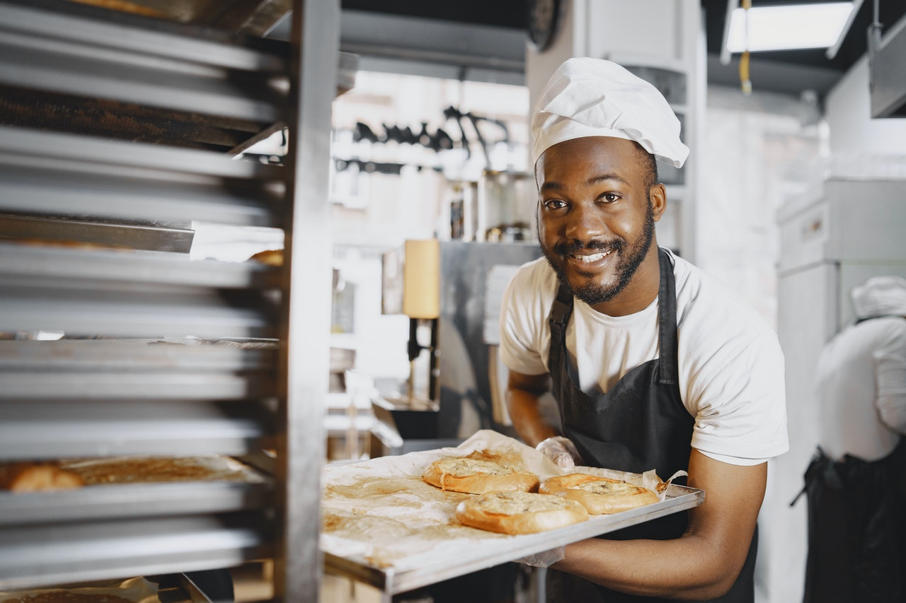
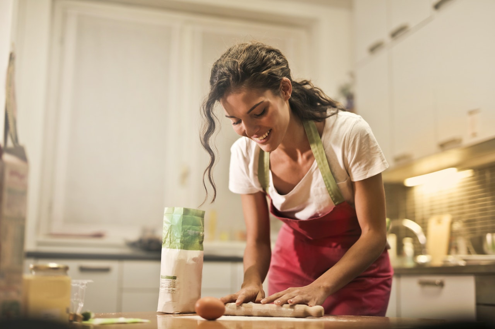

Sobre Nosotros
 Nuestros inicios fueron desde una pequeña pasteleria local, al día de hoy, estamos agradecidos porque seguimos compartiendo momentos increíbles, llevando nuestros productos a quienes gustan de la reposteria.
Hemos visto crecer familias enteras y hemos sido orgullosamente la fuente de alegría que ha endulzado sus fiestas, celebraciones, cumpleaños, aniversarios, desayunos, comidas familiares, meriendas y muchos momentos más.
Nuestra Historia
Nuestra historia nace en la hermosa ciudad Gudalajara en el año de 1983, en un lugar algo historico muy cercas del centro, la antigua colonia Americana, nuestra primer sucursal se encuentra en la avenida Vallarta y casi esquina calle colonias.
Nuestra pasión y el gusto por la repostería nos llevaron a crear nuestra propia casa y asi poder compartir nuestro pasatiempo y convertirlo en una experiencia de sabores y texturas.
A través de los años hemos perfeccionado nuestras técnicas y así poder compartir nuestras recetas para poder brindar la mejor calidad dentro de nuestros productos, nuestra labor nos lleva a ser cada vez mejores en lo que nos apasiona, la repostería.